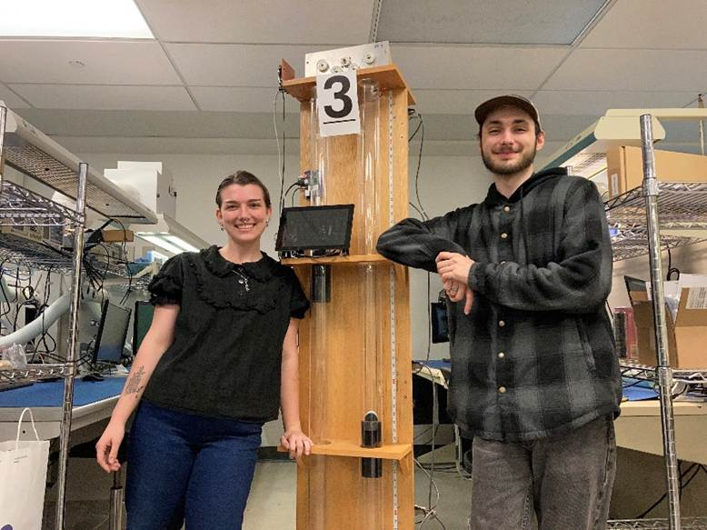

1. Set up STM32 Cube IDE
2. Set up Ubuntu Linux
3. Set up Github
4. Basics of Git bash
5. Remote connection to R-Pi (VNC)
6. Reviewed Project Charter
7. Basics of CANBus protocol
1. Created Project Plan
2. Basics of CANBus Protocol
3. Basics of Git bash
4. Created communications Test Plan
5. GUI layout plan
6. Project Team Logo and Conestoga Logo
· Logo was created using Google Drawings, by me (not AI generated)
· Conestoga Logo was downloaded from Google Images
1. Updated STM32 Nodes to have "200" IDs (200 - 203)
2. Communication: STM32 -> R-Pi -> Arduino (Elevator Controller)
1. Created Technical Document for RFID card reader
2. Completed Website Design for Ass. 1 (Software Eng)
· Basic CSS design using bootstrap
· Added customization, wrote ProjectVI.css (with Blaise) to format title, add logo, background, etc.
· Added Team Photo

3. Hardware implementation for card reader started
· Connections looked at
· Put on pause until distance reading communications from the Arduino are complete
4.
1. GUI Buttons/Background for the Elevator Controller Page
· Made in Google Drawings
2. Update Database with new floor number (w/ Blaise)
· Had issues with the CSS format for forms and had way too many forms. In the photo below, the buttons are all in separate forms, and the background is set to teto.gif.
· Blaise updated this to all be in one form, but we lost the button designs : (
· Despite this, the buttons communicate properly with the database and website control works perfectly.
· To be updated next week with proper button images including hover versions
3. Added Debug Function to Demo Loop
· Created a loop for the supervisory controller (R-Pi) to read and send messages from the STM32 boards to the nucleo
· Got this working together BUT wanted to print less messages, so added a diff variable to track how much variation and only show messages with a significant difference (>=30). Photo below shows the value is not being updated properly; this was my fault, as I set up a loop within a loop.
· We have absolutely fucked the pCanRx functionality now, so we will be debugging that next week.
4. Recorded Floor Announcment Audio
· Floor 1, Floor 2, Floor 3